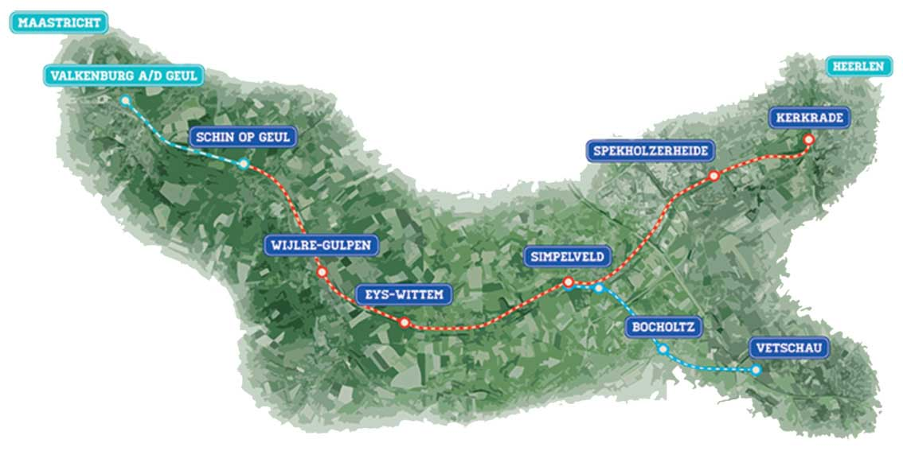
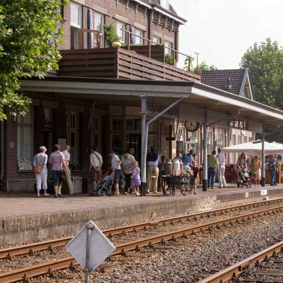
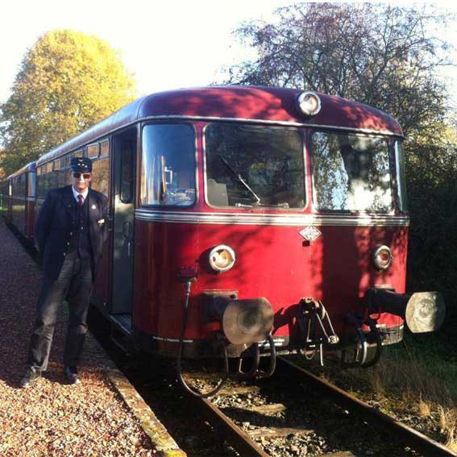
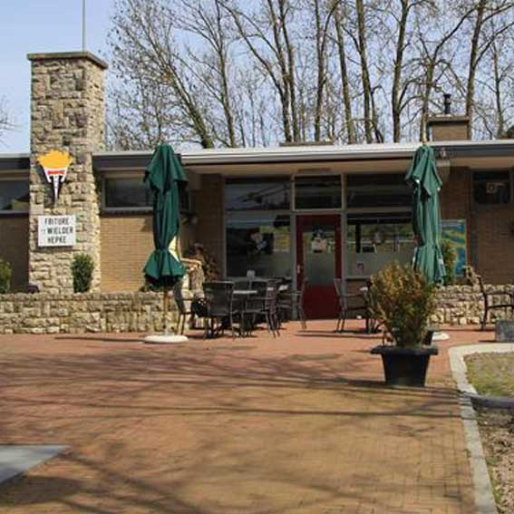

Welkom bij de Miljoenenlijn
De Mijoenenlijn is een prachtige spoorlijn dwars door het heuvelland van Zuid-Limburg. Stap op de stoomtrein van ruim 100 jaar oud en laat je meevoeren door het betoverend Zuid-Limburgs landschap.
Een nostalgische reis terug in de tijd.
In de luxe 1e klasse rijtuigen beleef je de romantiek van het reizen uit lang vervlogen tijd.
Je rijdt langs verschillende stations waar er verschillende activiteiten zijn te vinden die je terug brengen naar lang vervlogen tijden.

Halte Simpelveld
Zo’n 100 jaar geleden was grensstation Simpelveld het economisch centrum aan de spoorlijn van Aken naar Maastricht. Hier werden alle reizigers gevisiteerd (gecontroleerd) door douaniers.
Reizigers die de controle wisten te ontwijken, verhandelden hun smokkelwaar in één van de acht(!) café’s tegenover het station.
Vandaag de dag is het oude stationsgebouw uit 1908 nog steeds te bezichtigen en vormt zij het kloppend hart van de Zuid-Limburgse Stoomtrein Maatschappij. Op het emplacement vind je onder andere onze gezellige stationsrestauratie met terras, ’t Winkeltje en ons kleine museum.

Adres:
Stationstraat 22
6369 VJ Simpelveld
Parkeerplaats: Ja
OV: Ja
Rolstoeltoegankelijk: Ja
Horeca: Ja
Halte Eys-Wittem
Station Eys-Wittem is het station van Eys, tegenwoordig een station van de Miljoenenlijn. Het station is gelegen aan de spoorlijn van Simpelveld naar Schin op Geul en ligt aan de weg van Eys naar Wittem
ter hoogte van de buurtschap Eyserhalte dat naar dit station verwijst.
Op 6 mei 1900 werd het station onder de naam Eijs-Wittem geopend, het stationsgebouw was al sinds 1880 aanwezig.
Het station was duur in gebruik en werd daarom op 15 mei 1938 gesloten. Het stationsgebouw bestaat nog altijd.
Tot aan het einde van de exploitatie van de spoorlijn stopten enkele malen per jaar nog extra treinen op het station van Eijs-Wittem.
Dit waren bedevaart treinen met pelgrims op weg naar het klooster in Wittem.
In 1995 is de spoorlijn nieuw leven ingeblazen. De Miljoenenlijn rijdt met stoomtreinen tussen Simpelveld en Schin op Geul en tussen Simpelveld en Kerkrade.
Het stationnetje in Eys, dat inmiddels eigendom is van particulieren, is sindsdien heropend onder de nieuwe naam station Eys-Wittem.
De bediening van station Eys-Wittem is beperkt tot de rijdagen van de Miljoenenlijn.

Adres:
Wittemerweg 5
6287 AA Eys
Parkeerplaats: Ja, maar beperkt
OV: Ja
Rolstoeltoegankelijk: Nee
Horeca: Ja
Halte Wijlre-Gulpen
Station Wijlre-Gulpen werd geopend op 23 oktober 1853 als station aan de spoorlijn Aken-Maastricht. Het oorspronkelijke stationsgebouw, daterend uit 1853, werd in 1959 gesloopt om plaats te maken voor een kleiner gebouw.
Bij de sluiting van het traject Station Kerkrade Centrum - Station Simpelveld op 29 mei 1988 werd ook dit station gesloten. Sinds 1995 maakt het station deel uit van het traject van de Miljoenenlijn. In de periode van 28 juni 1922 tot en met de opheffing in 5 april 1938 heeft er hier ook een halte gelegen aan de tramlijn Gulpen-Wijlre-Vaals als onderdeel van de tramlijn Maastricht-Vaals.
Naast stationsgebouw van de Miljoenenlijn, doet het station sinds 2012 dienst als snackbar en broodjeszaak.

Adres:
Parallelweg 9
6321 BB Wijlre
Parkeerplaats: Ja
OV: Nee
Rolstoeltoegankelijk: Ja*
Horeca: Ja
* Het perron is rolstoeltoegankelijk, instappen is hier echter niet mogelijk.